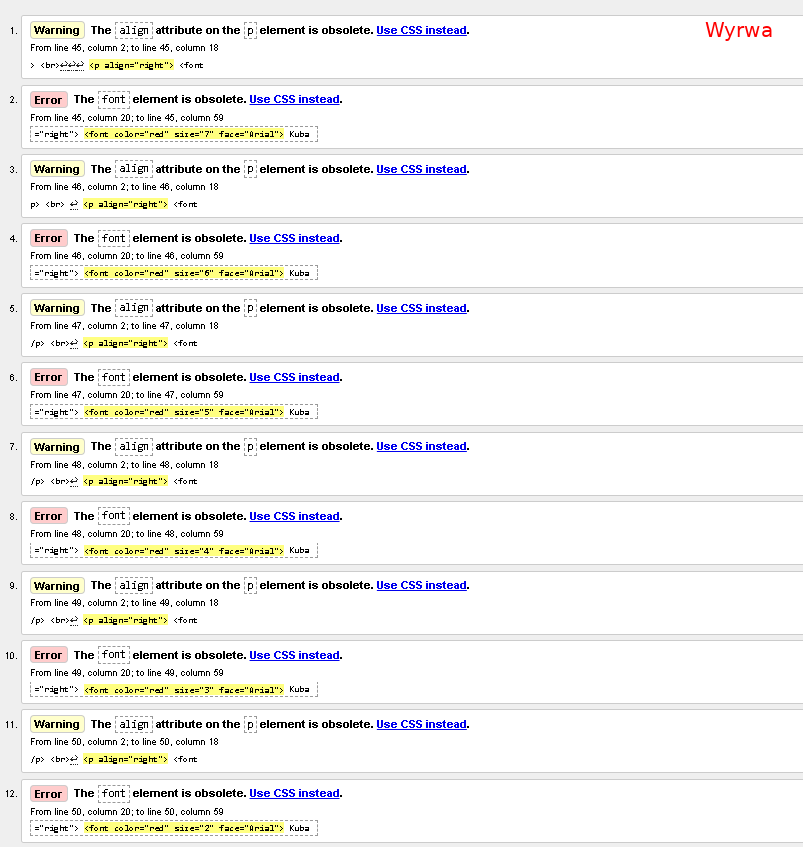
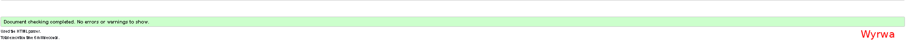

Tutaj jest walidacja
Definicja walidacji stron WWW
Walidacja strony internetowej to proces sprawdzania, czy kod HTML i CSS jest zgodny ze standardami W3C oraz wytycznymi WCAG, co zapewnia poprawność techniczną, dostępność i lepsze działanie strony.


Wróć